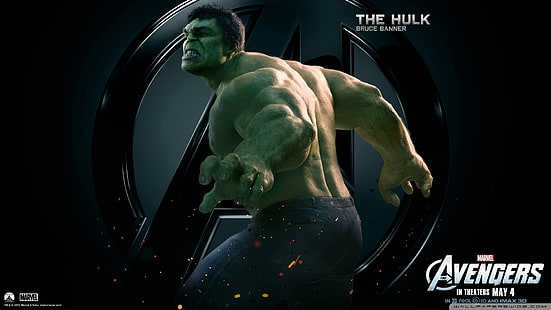
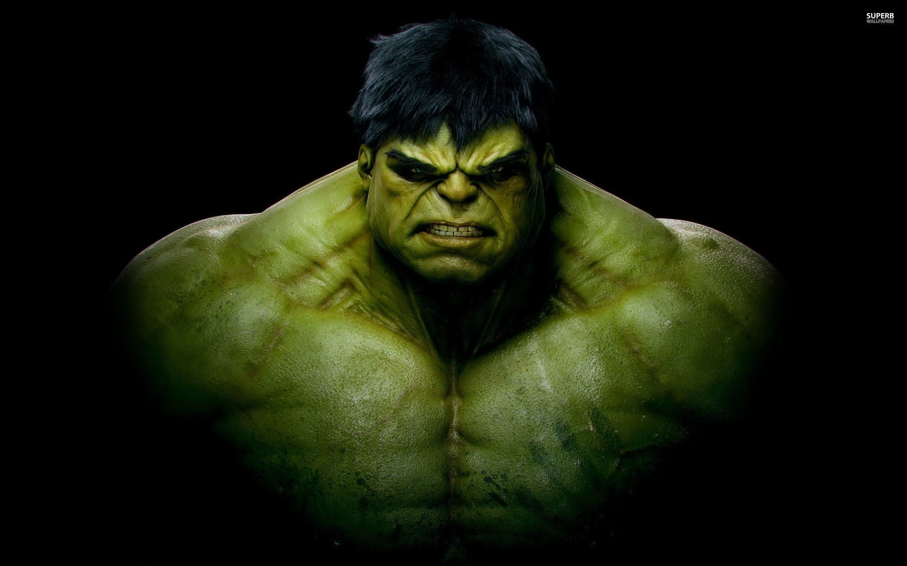

| HULK | HULK | |
|---|---|---|
|  | Bioscience genius Dr. Bruce Banner focused his major studies on the effects of gamma radiation on humans, working alongside Dr. Betty Ross at a Virginia University lab. Dr. Ross’ father, General “Thunderbolt” Ross of the U.S. Army, channeled Banner’s work into a program to develop weapons for the military, unbeknownst to both doctors. When Banner decided to test what he learned on himself, he triggered a fantastic transformation in himself that resulted in an immense, hulking figure fueled by his own rage. Having destroyed his lab as the creature, and inadvertently harming Ross in the process, Banner slipped away to avoid capture and study by the Army and began a desperate quest for a cure to his bizarre affliction. | As intelligent and cerebral as Bruce Banner is, his alter-ego the Hulk is a completely physical phenomenon. The green behemoth possesses the greatest raw strength of any natural being on Earth, with an upper limit that has yet to be fully tested. His leg muscles allow him to leap great distances and land without harm, and his skin can resist damage from heavy weaponry, as well as the natural elements and even unnatural ones. The Hulk has grown somewhat more intelligent over the years, beginning with the mind of nearly an infant and progressing to what might be described as the personality of a toddler. His speech has increased from growls and roars, to one or two words at a time, to full sentences, albeit broken and naïve. Banner recognizes the Hulk as himself, but often refers to him as “the other guy,” while his alter-ego seems to have little love or respect for the mild scientist and may not even be cognizant that Banner is himself. |
Hulk Make Friend |
| HULK | HULK | |
|---|---|---|
| While at the university at which he did his initial gamma research, Bruce Banner was romantically involved with his partner, Dr. Betty Ross. After becoming the Hulk, he seemed to maintain his memory and knowledge of the relationship and gravitated toward Betty to protect her from harm. After the Hulk’s first real battle with another creature nearly as strong as himself, he was prevented from killing his foe by Betty and fled the area without her, which seems to have been the last time they were in contact. After allying himself with the Avengers, Banner entered into a complex romantic relationship with Natasha Romanoff, the master spy called the Black Widow. At first, Banner resisted his feelings for Romanoff, citing his inability to live a normal life as a reason to maintain a platonic partnership with her. The Black Widow convinced him otherwise and for a brief moment it seemed the two might find happiness together, before the Hulk decided to leave, likely reflecting Banner’s own concerns. |  | Both Banner and the Hulk have witnessed a friendship flourish with the Asgardian Thor, a fellow Avenger. At first, the two struggled through violent clashes and petty arguments over who was the strongest, but these contests led to camaraderie during their time as enslaved gladiators on the planet Sakaar. In Thor, the Hulk may have finally found his truest companion.Tony Stark has also reached out to Bruce Banner as a peer in the realm of science, and as a man who suffers from a debilitation much like he himself once did. Together, the two have worked together on projects seemingly as one mind, though Banner has raised objections to what he feels are moral and ethical gaps in Stark’s push to advance technology. |